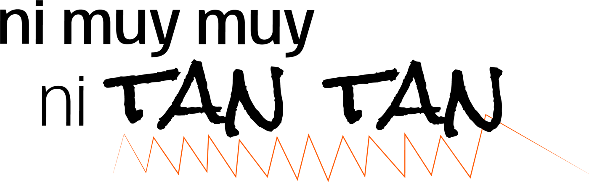
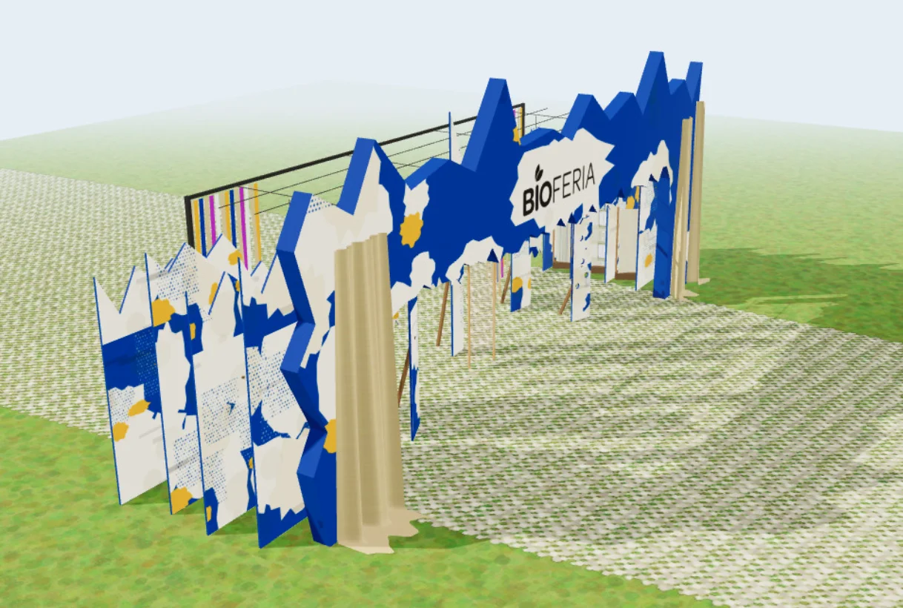
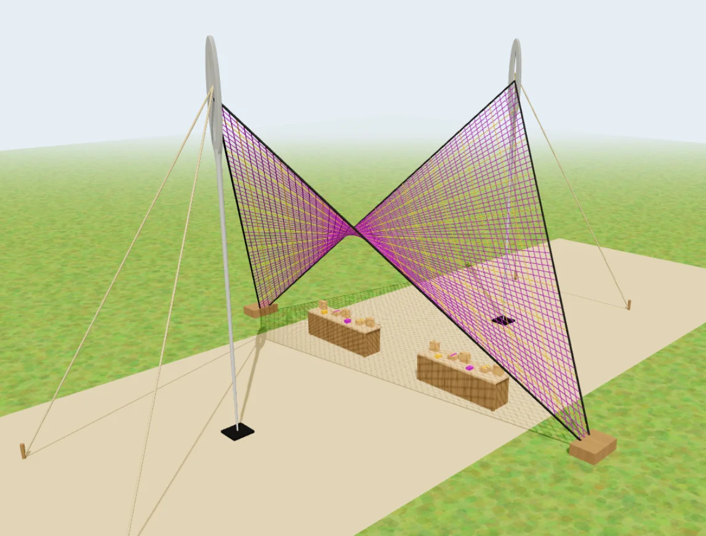
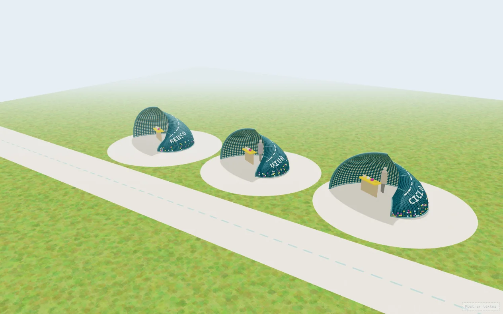
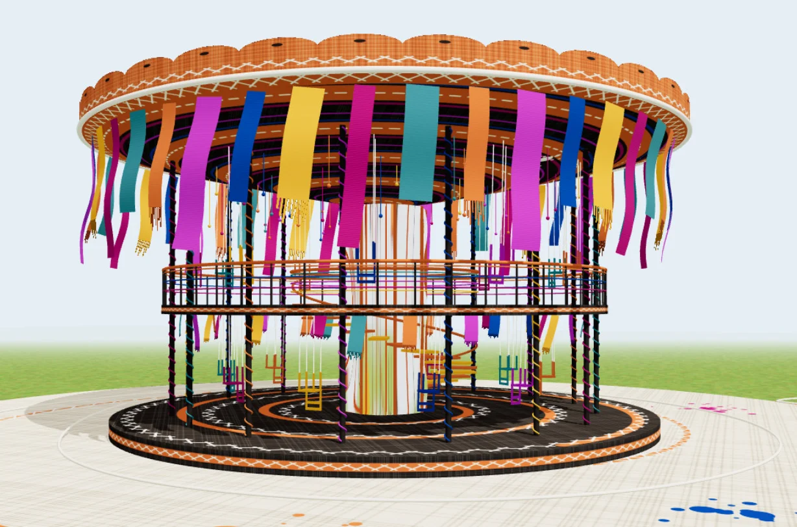
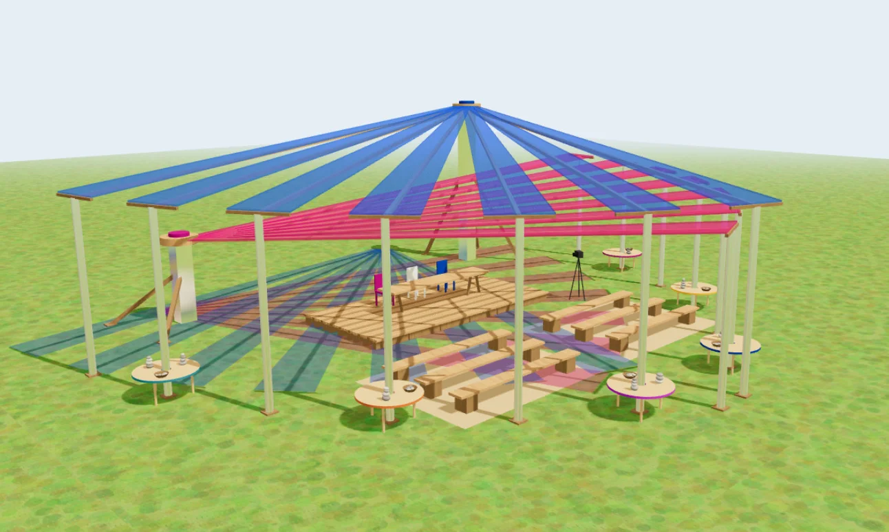
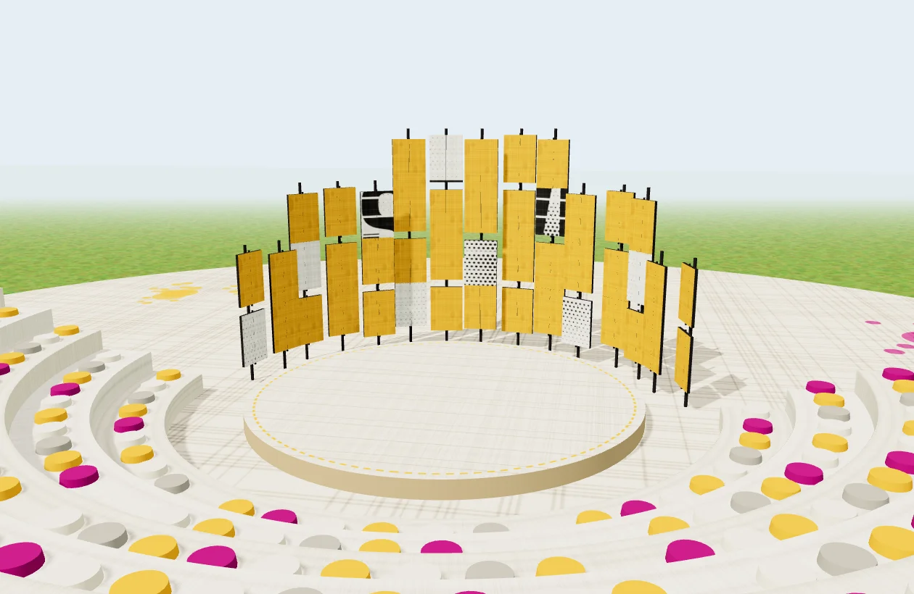
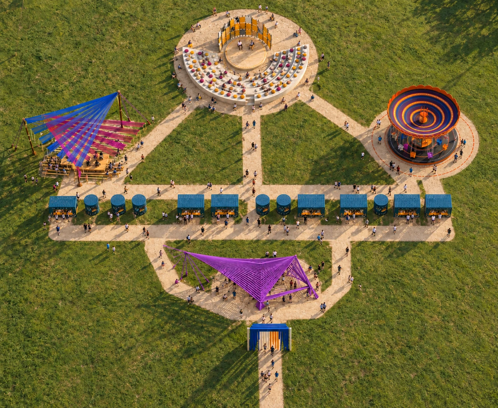

Ideas para mirar distinto
Conversaciones con referentes, organizaciones y voces que impulsan cambios.
Horario y participantes a confirmar
Tirá del hilo
Está en lo que ya existe, en lo que se superpone, en lo que espera otra mirada. Bioferia nos invita a descubrirlo juntos.

arrancá el afiche ↘
Bioferia reúne a emprendimientos, organizaciones, artistas y personas que buscan nuevas formas de cuidar el planeta y a quienes lo habitamos. Hay música en vivo, gastronomía consciente, charlas y experiencias para recorrer a tu ritmo.
En nuestra propuesta, empezamos por mirar lo que ya existe. Entre capas, materiales y encuentros aparecen posibilidades que una primera mirada no deja ver.
Conocé el concepto de la campaña ↗Cuenta regresiva para el primer día de Bioferia BA 2027.
La búsqueda de la medida justa se cuenta en seis momentos: desde aquello que ya estaba presente hasta la comprensión del recorrido completo.
Algo presente aún no se ve por completo.
Lo que existe empieza a tirar hacia otra posibilidad.
Una intervención precisa cambia la lectura.
La huella conserva la memoria del cambio.
Cada parte encuentra su lugar.
El recorrido completo se vuelve legible.
Charlas, talleres y experiencias en distintos escenarios. La programación con nombres y horarios de la edición 2027 todavía no fue publicada.
Los horarios y protagonistas se anunciarán más cerca del festival. Mientras tanto, explorá los tipos de actividades que Bioferia reúne.
Conversaciones con referentes, organizaciones y voces que impulsan cambios.
Horario y participantes a confirmarEncuentros participativos para llevarse nuevas preguntas y herramientas.
Horario y participantes a confirmarMúsica, propuestas culturales y espacios para recorrer con otros.
Horario y participantes a confirmarGirá la clavija hasta encontrar cuánto querés hacer. Floja no suena; tensa de más, se corta. Tu plan queda marcado en la agenda.
A tu medida
Desde el mercado y la gastronomía hasta la movilidad y las energías renovables. Elegí un área para descubrir qué tipos de propuestas reúne Bioferia.
Un espacio para conocer emprendimientos y nuevas formas de producir, elegir y consumir.
Los productos son ejemplos del tipo de propuestas; las marcas participantes de 2027 se anunciarán próximamente.
Un gesto chico cambia la dirección. Arrastrá la rueda y soltala: el área que queda bajo la aguja se abre arriba.
Seis espacios para atravesar la campaña, junto a propuestas de gastronomía, bienestar, sustentabilidad, arte y talleres. Las visualizaciones muestran el diseño propuesto; su realización y ubicación final están sujetas a confirmación.

Un umbral para descubrir lo que espera del otro lado.

Los hilos encuentran la tensión justa para sostener el encuentro.

Una nueva lectura aparece entre puntos, módulos y recorridos.

El movimiento deja rastros para seguir con la mirada.

Una trama compartida sostiene las distintas voces.

Las partes se reúnen y el recorrido se vuelve visible.
Esta vista cenital muestra la distribución conceptual de los seis espacios de la campaña en el Hipódromo de Palermo. Tocá un punto para descubrir qué hay en cada lugar.

Hipódromo de Palermo, Buenos Aires. Planeá el viaje con tiempo; los accesos específicos de Bioferia 2027 se comunicarán más cerca de la fecha.
Elegí la combinación que mejor te sirva y considerá viajar en transporte público cuando sea posible.
Consultá la entrada habilitada y la señalización de la edición antes de salir; el portal marca el comienzo del recorrido.
La disponibilidad y condiciones de estacionamiento para el festival están pendientes de confirmación oficial.
Lo necesario para planear la visita. La información operativa que aún no está publicada se actualizará por los canales de Bioferia.
Ir al sitio oficial ↗El 9, 10 y 11 de abril de 2027 en el Hipódromo de Palermo, Buenos Aires.
La web oficial anuncia la venta de entradas como “próximamente”. Consultá allí las novedades antes de comprar.
Los accesos y servicios específicos para la edición 2027 aún no figuran en la información publicada. Recomendamos consultar los canales oficiales antes de asistir.
Como sugerencia para pasar el día al aire libre: una botella reutilizable, una bolsa para tus compras, calzado cómodo y protección para el sol.
Usá el formulario de contacto del sitio oficial de Bioferia ↗.
Bioferia conecta proyectos de impacto positivo con una comunidad que quiere conocer, probar y compartir otras formas de hacer.
personas ya vivieron Bioferia en la región.
personas participaron en Bioferia BA 2026.
expositores eligieron Bioferia a lo largo de su historia.
Datos y acciones publicados por Bioferia ↗. Las cifras históricas no son una proyección para 2027.
La app acompaña todos los días: explorá una guía de sustentabilidad, guardá fichas y descubrí nuevas ideas. En el festival, cargá BioPoints y usá pagos con QR, mapa y agenda.
Las entradas para Bioferia BA 2027 figuran como próximas a la venta en el sitio oficial. Volvé a consultar cuando se acerque la fecha.
El afiche está descosido. Volvé a coserlo moviendo los cuadros al hueco: detrás está tu lugar en la preventa.
Cuando el afiche esté cosido, arrastrá el talón para cortarlo por el troquel.